Chapter 15: Genes and Proteins¶
Introduction¶
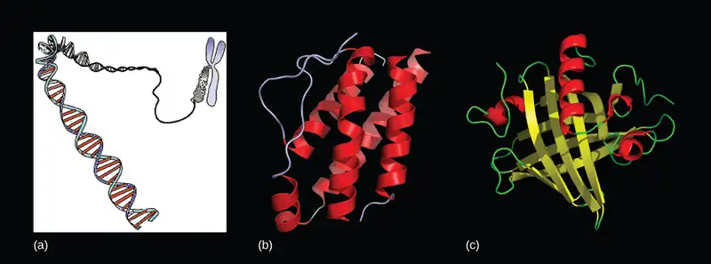
Since the rediscovery of Mendel’s work in 1900, the definition of the gene has progressed from an abstract unit of heredity to a tangible molecular entity capable of replication, expression, and mutation (Figure 15.1). Genes are composed of DNA and are linearly arranged on chromosomes. Genes specify the sequences of amino acids, which are the building blocks of proteins. In turn, proteins are responsible for orchestrating nearly every function of the cell. Both genes and the proteins they encode are absolutely essential to life as we know it.
15.1 The Genetic Code¶
Learning Objectives
By the end of this section, you will be able to do the following:
- Explain the “central dogma” of DNA-protein synthesis
- Describe the genetic code and how the nucleotide sequence prescribes the amino acid and the protein sequence
The cellular process of transcription generates messenger RNA (mRNA), a mobile molecular copy of one or more genes with an alphabet of A, C, G, and uracil (U). Translation of the mRNA template on ribosomes converts nucleotide-based genetic information into a protein product. That is the central dogma of DNA-protein synthesis. Protein sequences consist of 20 commonly occurring amino acids; therefore, it can be said that the protein alphabet consists of 20 “letters” (Figure 15.2). Different amino acids have different chemistries (such as acidic versus basic, or polar and nonpolar) and different structural constraints. Variation in amino acid sequence is responsible for the enormous variation in protein structure and function.
![Structures of the twenty amino acids are given. Six amino acids; glycine, alanine, valine, leucine, methionine, and isoleucine; have R groups that are non-polar and aliphatic, meaning they do not have a ring. Six amino acids; serine, threonine, cysteine, proline, asparagine, and glutamate; have R groups that are polar but uncharged. Three amino acids; lysine, arginine, and histidine; have R groups that are positively charged. Two amino acids, glutamate and aspartate, have R groups that are negatively charged. Three amino acids; phenylalanine, tyrosine, and tryptophan; have nonpolar and aromatic (meaning they have a ring) R groups.](img/figure-15-01-01.webp)
The Central Dogma: DNA Encodes RNA; RNA Encodes Protein¶
The flow of genetic information in cells from DNA to mRNA to protein is described by the central dogma (Figure 15.3), which states that genes specify the sequence of mRNAs, which in turn specify the sequence of amino acids making up all proteins. The decoding of one molecule to another is performed by specific proteins and RNAs. Because the information stored in DNA is so central to cellular function, it makes intuitive sense that the cell would make mRNA copies of this information for protein synthesis, while keeping the DNA itself intact and protected. The copying of DNA to RNA is relatively straightforward, with one nucleotide being added to the mRNA strand for every nucleotide read in the DNA strand. The translation to protein is a bit more complex because three mRNA nucleotides correspond to one amino acid in the polypeptide sequence. However, the translation to protein is still systematic and colinear, such that nucleotides 1 to 3 correspond to amino acid 1, nucleotides 4 to 6 correspond to amino acid 2, and so on.
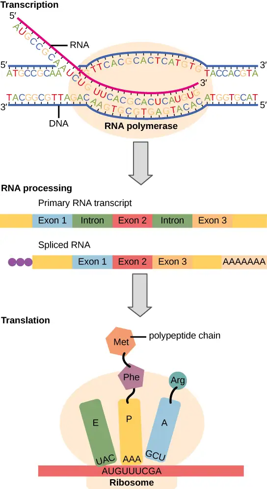
The Genetic Code Is Degenerate and Universal¶
Each amino acid is defined by a three-nucleotide sequence called the triplet codon. Given the different numbers of “letters” in the mRNA and protein “alphabets,” scientists theorized that single amino acids must be represented by combinations of nucleotides. Nucleotide doublets would not be sufficient to specify every amino acid because there are only 16 possible two-nucleotide combinations (42). In contrast, there are 64 possible nucleotide triplets (43), which is far more than the number of amino acids. Scientists theorized that amino acids were encoded by nucleotide triplets and that the genetic code was “degenerate.” In other words, a given amino acid could be encoded by more than one nucleotide triplet. This was later confirmed experimentally: Francis Crick and Sydney Brenner used the chemical mutagen proflavin to insert one, two, or three nucleotides into the gene of a virus. When one or two nucleotides were inserted, the normal proteins were not produced. When three nucleotides were inserted, the protein was synthesized and functional. This demonstrated that the amino acids must be specified by groups of three nucleotides. These nucleotide triplets are called codons. The insertion of one or two nucleotides completely changed the triplet reading frame, thereby altering the message for every subsequent amino acid (Figure 15.5). Though insertion of three nucleotides caused an extra amino acid to be inserted during translation, the integrity of the rest of the protein was maintained.
Scientists painstakingly solved the genetic code by translating synthetic mRNAs in vitro and sequencing the proteins they specified (Figure 15.4).
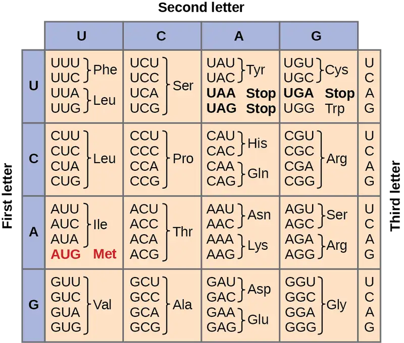
In addition to codons that instruct the addition of a specific amino acid to a polypeptide chain, three of the 64 codons terminate protein synthesis and release the polypeptide from the translation machinery. These triplets are called nonsense codons, or stop codons. Another codon, AUG, also has a special function. In addition to specifying the amino acid methionine, it also serves as the start codon to initiate translation. The reading frame for translation is set by the AUG start codon near the 5' end of the mRNA. Following the start codon, the mRNA is read in groups of three until a stop codon is encountered.
The arrangement of the coding table reveals the structure of the code. There are sixteen "blocks" of codons, each specified by the first and second nucleotides of the codons within the block, e.g., the "AC*" block that corresponds to the amino acid threonine (Thr). Some blocks are divided into a pyrimidine half, in which the codon ends with U or C, and a purine half, in which the codon ends with A or G. Some amino acids get a whole block of four codons, like alanine (Ala), threonine (Thr) and proline (Pro). Some get the pyrimidine half of their block, like histidine (His) and asparagine (Asn). Others get the purine half of their block, like glutamate (Glu) and lysine (Lys). Note that some amino acids get a block and a half-block for a total of six codons.
The specification of a single amino acid by multiple similar codons is called "degeneracy." Degeneracy is believed to be a cellular mechanism to reduce the negative impact of random mutations. Codons that specify the same amino acid typically only differ by one nucleotide. In addition, amino acids with chemically similar side chains are encoded by similar codons. For example, aspartate (Asp) and glutamate (Glu), which occupy the GA* block, are both negatively charged. This nuance of the genetic code ensures that a single-nucleotide substitution mutation might specify the same amino acid but have no effect or specify a similar amino acid, preventing the protein from being rendered completely nonfunctional.
The genetic code is nearly universal. With a few minor exceptions, virtually all species use the same genetic code for protein synthesis. Conservation of codons means that a purified mRNA encoding the globin protein in horses could be transferred to a tulip cell, and the tulip would synthesize horse globin. That there is only one genetic code is powerful evidence that all of life on Earth shares a common origin, especially considering that there are about 1084 possible combinations of 20 amino acids and 64 triplet codons.
Interactive
Transcribe a gene and translate it to protein using complementary pairing and the genetic code at this site.
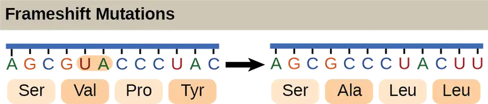
Scientific Method Connection
Which Has More DNA: A Kiwi or a Strawberry?
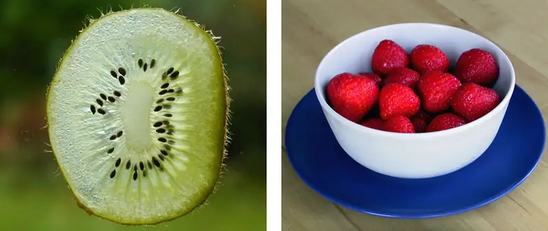
Question: Would a kiwi and strawberry that are approximately the same size (Figure 15.6) also have approximately the same amount of DNA?
Background: Genes are carried on chromosomes and are made of DNA. All mammals are diploid, meaning they have two copies of each chromosome. However, not all plants are diploid. The common strawberry is octoploid (8n) and the cultivated kiwi is hexaploid (6n). Research the total number of chromosomes in the cells of each of these fruits and think about how this might correspond to the amount of DNA in these fruits’ cell nuclei. What other factors might contribute to the total amount of DNA in a single fruit? Read about the technique of DNA isolation to understand how each step in the isolation protocol helps liberate and precipitate DNA.
Hypothesis: Hypothesize whether you would be able to detect a difference in DNA quantity from similarly sized strawberries and kiwis. Which fruit do you think would yield more DNA?
Test your hypothesis: Isolate the DNA from a strawberry and a kiwi that are similarly sized. Perform the experiment in at least triplicate for each fruit
- Prepare a bottle of DNA extraction buffer from 900 mL water, 50 mL dish detergent, and two teaspoons of table salt. Mix by inversion (cap it and turn it upside down a few times).
- Grind a strawberry and a kiwi by hand in a plastic bag, or using a mortar and pestle, or with a metal bowl and the end of a blunt instrument. Grind for at least two minutes per fruit.
- Add 10 mL of the DNA extraction buffer to each fruit, and mix well for at least one minute.
- Remove cellular debris by filtering each fruit mixture through cheesecloth or porous cloth and into a funnel placed in a test tube or an appropriate container.
- Pour ice-cold ethanol or isopropanol (rubbing alcohol) into the test tube. You should observe white, precipitated DNA.
- Gather the DNA from each fruit by winding it around separate glass rods.
Record your observations: Because you are not quantitatively measuring DNA volume, you can record for each trial whether the two fruits produced the same or different amounts of DNA as observed by eye. If one or the other fruit produced noticeably more DNA, record this as well. Determine whether your observations are consistent with several pieces of each fruit.
Analyze your data: Did you notice an obvious difference in the amount of DNA produced by each fruit? Were your results reproducible?
Draw a conclusion: Given what you know about the number of chromosomes in each fruit, can you conclude that chromosome number necessarily correlates to DNA amount? Can you identify any drawbacks to this procedure? If you had access to a laboratory, how could you standardize your comparison and make it more quantitative?
15.2 Prokaryotic Transcription¶
Learning Objectives
By the end of this section, you will be able to do the following:
- List the different steps in prokaryotic transcription
- Discuss the role of promoters in prokaryotic transcription
- Describe how and when transcription is terminated
The prokaryotes, which include Bacteria and Archaea, are mostly single-celled organisms that, by definition, lack membrane-bound nuclei and other organelles. A bacterial chromosome is a closed circle that, unlike eukaryotic chromosomes, is not organized around histone proteins. The central region of the cell in which prokaryotic DNA resides is called the nucleoid region. In addition, prokaryotes often have abundant plasmids, which are shorter, circular DNA molecules that may only contain one or a few genes. Plasmids can be transferred independently of the bacterial chromosome during cell division and often carry traits such as those involved with antibiotic resistance.
Transcription in prokaryotes (and in eukaryotes) requires the DNA double helix to partially unwind in the region of mRNA synthesis. The region of unwinding is called a transcription bubble. Transcription always proceeds from the same DNA strand for each gene, which is called the template strand. The mRNA product is complementary to the template strand and is almost identical to the other DNA strand, called the nontemplate strand, or the coding strand. The only nucleotide difference is that in mRNA, all of the T nucleotides are replaced with U nucleotides (Figure 15.7). In an RNA double helix, A can bind U via two hydrogen bonds, just as in A–T pairing in a DNA double helix.
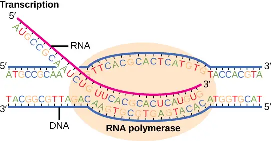
The nucleotide pair in the DNA double helix that corresponds to the site from which the first 5' mRNA nucleotide is transcribed is called the +1 site, or the initiation site. Nucleotides preceding the initiation site are denoted with a “-” and are designated upstream nucleotides. Conversely, nucleotides following the initiation site are denoted with “+” numbering and are called downstream nucleotides.
Initiation of Transcription in Prokaryotes¶
Prokaryotes do not have membrane-enclosed nuclei. Therefore, the processes of transcription, translation, and mRNA degradation can all occur simultaneously. The intracellular level of a bacterial protein can quickly be amplified by multiple transcription and translation events that occur concurrently on the same DNA template. Prokaryotic genomes are very compact, and prokaryotic transcripts often cover more than one gene or cistron (a coding sequence for a single protein). Polycistronic mRNAs are then translated to produce more than one kind of protein.
Our discussion here will exemplify transcription by describing this process in Escherichia coli, a well-studied eubacterial species. Although some differences exist between transcription in E. coli and transcription in archaea, an understanding of E. coli transcription can be applied to virtually all bacterial species.
Prokaryotic RNA Polymerase¶
Prokaryotes use the same RNA polymerase to transcribe all of their genes. In E. coli, the polymerase is composed of five polypeptide subunits, two of which are identical. Four of these subunits, denoted α, α, β, and β', comprise the polymerase core enzyme. These subunits assemble every time a gene is transcribed, and they disassemble once transcription is complete. Each subunit has a unique role; the two α-subunits are necessary to assemble the polymerase on the DNA; the β-subunit binds to the ribonucleoside triphosphate that will become part of the nascent mRNA molecule; and the β' subunit binds the DNA template strand. The fifth subunit, σ, is involved only in transcription initiation. It confers transcriptional specificity such that the polymerase begins to synthesize mRNA from an appropriate initiation site. Without σ, the core enzyme would transcribe from random sites and would produce mRNA molecules that specified protein gibberish. The polymerase comprised of all five subunits is called the holoenzyme.
Prokaryotic Promoters¶
A promoter is a DNA sequence onto which the transcription machinery, including RNA polymerase, binds and initiates transcription. In most cases, promoters exist upstream of the genes they regulate. The specific sequence of a promoter is very important because it determines whether the corresponding gene is transcribed all the time, some of the time, or infrequently. Although promoters vary among prokaryotic genomes, a few elements are evolutionarily conserved in many species. At the -10 and -35 regions upstream of the initiation site, there are two promoter consensus sequences, or regions that are similar across all promoters and across various bacterial species (Figure 15.8). The -10 sequence, called the -10 region, has the consensus sequence TATAAT. The -35 sequence has the consensus sequence TTGACA. These consensus sequences are recognized and bound by σ. Once this interaction is made, the subunits of the core enzyme bind to the site. The A–T-rich -10 region facilitates unwinding of the DNA template, and several phosphodiester bonds are made. The transcription initiation phase ends with the production of abortive transcripts, which are polymers of approximately 10 nucleotides that are made and released.
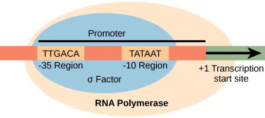
Interactive
View this MolecularMovies animation to see the transcription process as it happens in the cell.
Elongation and Termination in Prokaryotes¶
The transcription elongation phase begins with the release of the σ subunit from the polymerase. The dissociation of σ allows the core enzyme to proceed along the DNA template, synthesizing mRNA in the 5' to 3' direction at a rate of approximately 40 nucleotides per second. As elongation proceeds, the DNA is continuously unwound ahead of the core enzyme and rewound behind it. The base pairing between DNA and RNA is not stable enough to maintain the stability of the mRNA synthesis components. Instead, the RNA polymerase acts as a stable linker between the DNA template and the nascent RNA strands to ensure that elongation is not interrupted prematurely.
Prokaryotic Termination Signals¶
Once a gene is transcribed, the prokaryotic polymerase needs to be instructed to dissociate from the DNA template and liberate the newly made mRNA. Depending on the gene being transcribed, there are two kinds of termination signals. One is protein-based and the other is RNA-based. Rho-dependent termination is controlled by the rho (ρ) protein, which tracks along behind the polymerase on the growing mRNA chain. Near the end of the gene, the polymerase encounters a run of G nucleotides on the DNA template and it stalls. As a result, the rho protein collides with the polymerase. The interaction with rho releases the mRNA from the transcription bubble.
Rho-independent termination is controlled by specific sequences in the DNA template strand. As the polymerase nears the end of the gene being transcribed, it encounters a region rich in C–G nucleotides. The mRNA folds back on itself, and the complementary C–G nucleotides bind together. The result is a stable hairpin that causes the polymerase to stall as soon as it begins to transcribe a region rich in A–T nucleotides. The complementary U–A region of the mRNA transcript forms only a weak interaction with the template DNA. This, coupled with the stalled polymerase, induces enough instability for the core enzyme to break away and liberate the new mRNA transcript.
Upon termination, the process of transcription is complete. By the time termination occurs, the prokaryotic transcript would already have been used to begin synthesis of numerous copies of the encoded protein because these processes can occur concurrently. The unification of transcription, translation, and even mRNA degradation is possible because all of these processes occur in the same 5' to 3' direction, and because there is no membranous compartmentalization in the prokaryotic cell (Figure 15.9). In contrast, the presence of a nucleus in eukaryotic cells precludes simultaneous transcription and translation.
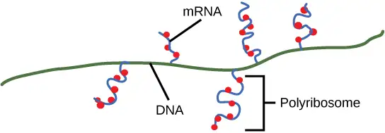
Interactive
Visit this BioStudio animation to see the process of prokaryotic transcription.
15.3 Eukaryotic Transcription¶
Learning Objectives
By the end of this section, you will be able to do the following:
- List the steps in eukaryotic transcription
- Discuss the role of RNA polymerases in transcription
- Compare and contrast the three RNA polymerases
- Explain the significance of transcription factors
Prokaryotes and eukaryotes perform fundamentally the same process of transcription, with a few key differences. The most important difference between prokaryote and eukaryote transcription is due to the latter’s membrane-bound nucleus and organelles. With the genes bound in a nucleus, the eukaryotic cell must be able to transport its mRNA to the cytoplasm and must protect its mRNA from degrading before it is translated. Eukaryotes also employ three different polymerases that each transcribe a different subset of genes. Eukaryotic mRNAs are usually monogenic, meaning that they specify a single protein.
Initiation of Transcription in Eukaryotes¶
Unlike the prokaryotic polymerase that can bind to a DNA template on its own, eukaryotes require several other proteins, called transcription factors, to first bind to the promoter region and then to help recruit the appropriate polymerase.
The Three Eukaryotic RNA Polymerases¶
The features of eukaryotic mRNA synthesis are markedly more complex than those of prokaryotes. Instead of a single polymerase comprising five subunits, the eukaryotes have three polymerases that are each made up of 10 subunits or more. Each eukaryotic polymerase also requires a distinct set of transcription factors to bring it to the DNA template.
RNA polymerase I is located in the nucleolus, a specialized nuclear substructure in which ribosomal RNA (rRNA) is transcribed, processed, and assembled into ribosomes (Table 15.1). The rRNA molecules are considered structural RNAs because they have a cellular role but are not translated into protein. The rRNAs are components of the ribosome and are essential to the process of translation. RNA polymerase I synthesizes all of the rRNAs from the tandemly duplicated set of 18S, 5.8S, and 28S ribosomal genes. (Note that the “S” designation applies to “Svedberg” units, a nonadditive value that characterizes the speed at which a particle sediments during centrifugation.)
Table 15.1
| Locations, Products, and Sensitivities of the Three Eukaryotic RNA Polymerases | |||
|---|---|---|---|
| RNA Polymerase | Cellular Compartment | Product of Transcription | α-Amanitin Sensitivity |
| I | Nucleolus | All rRNAs except 5S rRNA | Insensitive |
| II | Nucleus | All protein-coding nuclear pre-mRNAs | Extremely sensitive |
| III | Nucleus | 5S rRNA, tRNAs, and small nuclear RNAs | Moderately sensitive |
RNA polymerase II is located in the nucleus and synthesizes all protein-coding nuclear pre-mRNAs. Eukaryotic pre-mRNAs undergo extensive processing after transcription but before translation. For clarity, this module’s discussion of transcription and translation in eukaryotes will use the term “mRNAs” to describe only the mature, processed molecules that are ready to be translated. RNA polymerase II is responsible for transcribing the overwhelming majority of eukaryotic genes.
RNA polymerase III is also located in the nucleus. This polymerase transcribes a variety of structural RNAs that includes the 5S pre-rRNA, transfer pre-RNAs (pre-tRNAs), and small nuclear pre-RNAs. The tRNAs have a critical role in translation; they serve as the “adaptor molecules” between the mRNA template and the growing polypeptide chain. Small nuclear RNAs have a variety of functions, including “splicing” pre-mRNAs and regulating transcription factors.
A scientist characterizing a new gene can determine which polymerase transcribes it by testing whether the gene is expressed in the presence of α-amanitin, an oligopeptide toxin produced by the fly agaric toadstool mushroom and other species of Amanita. Interestingly, the α-amanitin affects the three polymerases very differently (Table 15.1). RNA polymerase I is completely insensitive to α-amanitin, meaning that the polymerase can transcribe DNA in vitro in the presence of this poison. RNA polymerase III is moderately sensitive to the toxin. In contrast, RNA polymerase II is extremely sensitive to α-amanitin. The toxin prevents the enzyme from progressing down the DNA, and thus inhibits transcription. Knowing the transcribing polymerase can provide clues as to the general function of the gene being studied. Because RNA polymerase II transcribes the vast majority of genes, we will focus on this polymerase in our subsequent discussions about eukaryotic transcription factors and promoters.
RNA Polymerase II Promoters and Transcription Factors¶
Eukaryotic promoters are much larger and more intricate than prokaryotic promoters. However, both have a sequence similar to the -10 sequence of prokaryotes. In eukaryotes, this sequence is called the TATA box, and has the consensus sequence TATAAA on the coding strand. It is located at -25 to -35 bases relative to the initiation (+1) site (Figure 15.10). This sequence is not identical to the E. coli -10 box, but it conserves the A–T rich element. The thermostability of A–T bonds is low and this helps the DNA template to locally unwind in preparation for transcription.
Instead of the simple σ factor that helps bind the prokaryotic RNA polymerase to its promoter, eukaryotes assemble a complex of transcription factors required to recruit RNA polymerase II to a protein coding gene. Transcription factors that bind to the promoter are called basal transcription factors. These basal factors are all called TFII (for Transcription Factor/polymerase II) plus an additional letter (A-J). The core complex is TFIID, which includes a TATA-binding protein (TBP). The other transcription factors systematically fall into place on the DNA template, with each one further stabilizing the pre-initiation complex and contributing to the recruitment of RNA polymerase II.
Visual Connection
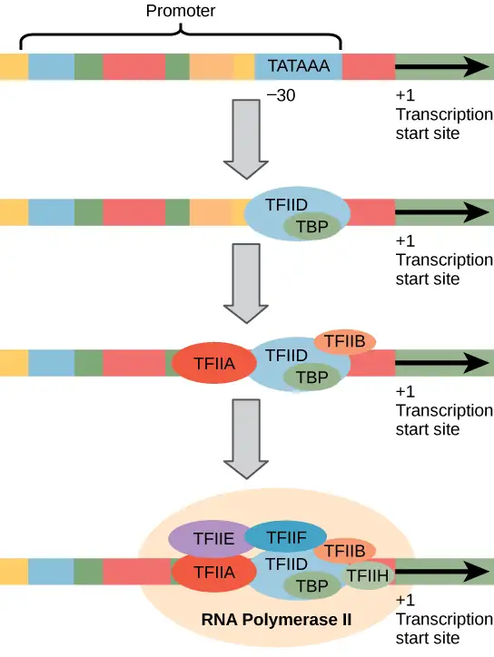
A scientist splices a eukaryotic promoter in front of a bacterial gene and inserts the gene in a bacterial chromosome. Would you expect the bacteria to transcribe the gene?
Some eukaryotic promoters also have a conserved CAAT box (GGCCAATCT) at approximately -80. Further upstream of the TATA box, eukaryotic promoters may also contain one or more GC-rich boxes (GGCG) or octamer boxes (ATTTGCAT). These elements bind cellular factors that increase the efficiency of transcription initiation and are often identified in more “active” genes that are constantly being expressed by the cell.
Basal transcription factors are crucial in the formation of a preinitiation complex on the DNA template that subsequently recruits RNA polymerase II for transcription initiation. The complexity of eukaryotic transcription does not end with the polymerases and promoters. An army of other transcription factors, which bind to upstream enhancers and silencers, also help to regulate the frequency with which pre-mRNA is synthesized from a gene. Enhancers and silencers affect the efficiency of transcription but are not necessary for transcription to proceed.
Promoter Structures for RNA Polymerases I and III¶
The processes of bringing RNA polymerases I and III to the DNA template involve slightly less complex collections of transcription factors, but the general theme is the same.
The conserved promoter elements for genes transcribed by polymerases I and III differ from those transcribed by RNA polymerase II. RNA polymerase I transcribes genes that have two GC-rich promoter sequences in the -45 to +20 region. These sequences alone are sufficient for transcription initiation to occur, but promoters with additional sequences in the region from -180 to -105 upstream of the initiation site will further enhance initiation. Genes that are transcribed by RNA polymerase III have upstream promoters or promoters that occur within the genes themselves.
Eukaryotic transcription is a tightly regulated process that requires a variety of proteins to interact with each other and with the DNA strand. Although the process of transcription in eukaryotes involves a greater metabolic investment than in prokaryotes, it ensures that the cell transcribes precisely the pre-mRNAs that it needs for protein synthesis.
Evolution Connection: The Evolution of Promoters
The evolution of genes may be a familiar concept. Mutations can occur in genes during DNA replication, and the result may or may not be beneficial to the cell. By altering an enzyme, structural protein, or some other factor, the process of mutation can transform functions or physical features. However, eukaryotic promoters and other gene regulatory sequences may evolve as well. For instance, consider a gene that, over many generations, becomes more valuable to the cell. Maybe the gene encodes a structural protein that the cell needs to synthesize in abundance for a certain function. If this is the case, it would be beneficial to the cell for that gene’s promoter to recruit transcription factors more efficiently and increase gene expression.
Scientists examining the evolution of promoter sequences have reported varying results. In part, this is because it is difficult to infer exactly where a eukaryotic promoter begins and ends. Some promoters occur within genes; others are located very far upstream, or even downstream, of the genes they are regulating. However, when researchers limited their examination to human core promoter sequences that were defined experimentally as sequences that bind the preinitiation complex, they found that promoters evolve even faster than protein-coding genes.
It is still unclear how promoter evolution might correspond to the evolution of humans or other complex organisms. However, the evolution of a promoter to effectively make more or less of a given gene product is an intriguing alternative to the evolution of the genes themselves.1
Eukaryotic Elongation and Termination¶
Following the formation of the preinitiation complex, the polymerase is released from the other transcription factors, and elongation is allowed to proceed as it does in prokaryotes with the polymerase synthesizing pre-mRNA in the 5' to 3' direction. As discussed previously, RNA polymerase II transcribes the major share of eukaryotic genes, so in this section we will focus on how this polymerase accomplishes elongation and termination.
Although the enzymatic process of elongation is essentially the same in eukaryotes and prokaryotes, the DNA template is considerably more complex. When eukaryotic cells are not dividing, their genes exist as a diffuse mass of DNA and proteins called chromatin. The DNA is tightly packaged around charged histone proteins at repeated intervals. These DNA–histone complexes, collectively called nucleosomes, are regularly spaced and include 146 nucleotides of DNA wound around eight histones like thread around a spool.
For polynucleotide synthesis to occur, the transcription machinery needs to move histones out of the way every time it encounters a nucleosome. This is accomplished by a special protein complex called FACT, which stands for “facilitates chromatin transcription.” This complex pulls histones away from the DNA template as the polymerase moves along it. Once the pre-mRNA is synthesized, the FACT complex replaces the histones to recreate the nucleosomes.
The termination of transcription is different for the different polymerases. Unlike in prokaryotes, elongation by RNA polymerase II in eukaryotes takes place 1,000 to 2,000 nucleotides beyond the end of the gene being transcribed. This pre-mRNA tail is subsequently removed by cleavage during mRNA processing. On the other hand, RNA polymerases I and III require termination signals. Genes transcribed by RNA polymerase I contain a specific 18-nucleotide sequence that is recognized by a termination protein. The process of termination in RNA polymerase III involves an mRNA hairpin similar to rho-independent termination of transcription in prokaryotes.
15.4 RNA Processing in Eukaryotes¶
Learning Objectives
By the end of this section, you will be able to do the following:
- Describe the different steps in RNA processing
- Understand the significance of exons, introns, and splicing for mRNAs
- Explain how tRNAs and rRNAs are processed
After transcription, eukaryotic pre-mRNAs must undergo several processing steps before they can be translated. Eukaryotic (and prokaryotic) tRNAs and rRNAs also undergo processing before they can function as components in the protein-synthesis machinery.
mRNA Processing¶
The eukaryotic pre-mRNA undergoes extensive processing before it is ready to be translated. Eukaryotic protein-coding sequences are not continuous, as they are in prokaryotes. The coding sequences (exons) are interrupted by noncoding introns, which must be removed to make a translatable mRNA. The additional steps involved in eukaryotic mRNA maturation also create a molecule with a much longer half-life than a prokaryotic mRNA. Eukaryotic mRNAs last for several hours, whereas the typical E. coli mRNA lasts no more than five seconds.
Pre-mRNAs are first coated in RNA-stabilizing proteins; these protect the pre-mRNA from degradation while it is processed and exported out of the nucleus. The three most important steps of pre-mRNA processing are the addition of stabilizing and signaling factors at the 5' and 3' ends of the molecule, and the removal of the introns (Figure 15.11). In rare cases, the mRNA transcript can be “edited” after it is transcribed.
![An illustration shows that in Pre- m R N A processing, there is a primary R N A transcript including regions labeled, left to right, as exon 1, intron, exon 2, intron, and exon 3. The introns are cut and exons are spliced together to produce mRNA. After R N A processing, there is a spliced R N A with these parts, left to right are a 5 prime cap, a 5 prime untranslated region, exon 1, exon 2, exon 3, a 3 prime untranslated region, and a poly a tail. The 5 prime unstranslated region is not separate from exon 1, but is the beginning of exon 1. The 3 prime untranslated region is not separate from exon 3 but the final part of exon 3.](img/figure-15-03-02-8243.webp)
Evolution Connection: RNA Editing in Trypanosomes
The trypanosomes are a group of protozoa that include the pathogen Trypanosoma brucei, which causes nagana in cattle and sleeping sickness in humans throughout great areas of Africa (Figure 15.12). The trypanosome is carried by biting flies in the genus Glossina (commonly called tsetse flies). Trypanosomes, and virtually all other eukaryotes, have organelles called mitochondria that supply the cell with chemical energy. Mitochondria are organelles that express their own DNA and are believed to be the remnants of a symbiotic relationship between a eukaryote and an engulfed prokaryote. The mitochondrial DNA of trypanosomes exhibit an interesting exception to the central dogma: their pre-mRNAs do not have the correct information to specify a functional protein. Usually, this is because the mRNA is missing several U nucleotides. The cell performs an additional RNA processing step called RNA editing to remedy this.
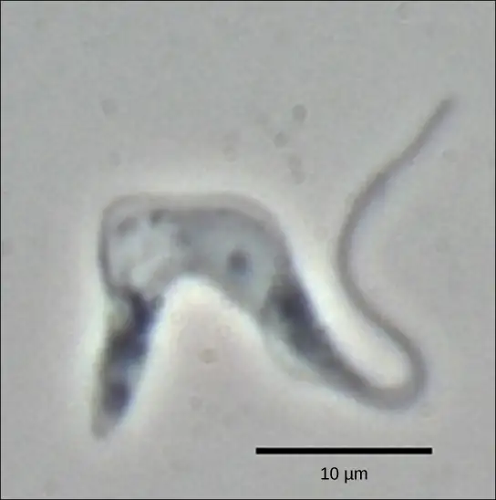
Other genes in the mitochondrial genome encode 40- to 80-nucleotide guide RNAs. One or more of these molecules interacts by complementary base pairing with some of the nucleotides in the pre-mRNA transcript. However, the guide RNA has more A nucleotides than the pre-mRNA has U nucleotides with which to bind. In these regions, the guide RNA loops out. The 3' ends of guide RNAs have a long poly-U tail, and these U bases are inserted in regions of the pre-mRNA transcript at which the guide RNAs are looped. This process is entirely mediated by RNA molecules. That is, guide RNAs—rather than proteins—serve as the catalysts in RNA editing.
RNA editing is not just a phenomenon of trypanosomes. In the mitochondria of some plants, almost all pre-mRNAs are edited. RNA editing has also been identified in mammals such as rats, rabbits, and even humans. What could be the evolutionary reason for this additional step in pre-mRNA processing? One possibility is that the mitochondria, being remnants of ancient prokaryotes, have an equally ancient RNA-based method for regulating gene expression. In support of this hypothesis, edits made to pre-mRNAs differ depending on cellular conditions. Although speculative, the process of RNA editing may be a holdover from a primordial time when RNA molecules, instead of proteins, were responsible for catalyzing reactions.
5' Capping¶
While the pre-mRNA is still being synthesized, a 7-methylguanosine cap is added to the 5' end of the growing transcript by a phosphate linkage. This functional group protects the nascent mRNA from degradation. In addition, factors involved in protein synthesis recognize the cap to help initiate translation by ribosomes.
3' Poly-A Tail¶
Once elongation is complete, the pre-mRNA is cleaved by an endonuclease between an AAUAAA consensus sequence and a GU-rich sequence, leaving the AAUAAA sequence on the pre-mRNA. An enzyme called poly-A polymerase then adds a string of approximately 200 A residues, called the poly-A tail. This modification further protects the pre-mRNA from degradation and is also the binding site for a protein necessary for exporting the processed mRNA to the cytoplasm.
Pre-mRNA Splicing¶
Eukaryotic genes are composed of exons, which correspond to protein-coding sequences (ex-on signifies that they are expressed), and intervening sequences called introns (int-ron denotes their intervening role), which may be involved in gene regulation but are removed from the pre-mRNA during processing. Intron sequences in mRNA do not encode functional proteins.
The discovery of introns came as a surprise to researchers in the 1970s who expected that pre-mRNAs would specify protein sequences without further processing, as they had observed in prokaryotes. The genes of higher eukaryotes very often contain one or more introns. These regions may correspond to regulatory sequences; however, the biological significance of having many introns or having very long introns in a gene is unclear. It is possible that introns slow down gene expression because it takes longer to transcribe pre-mRNAs with lots of introns. Alternatively, introns may be nonfunctional sequence remnants left over from the fusion of ancient genes throughout the course of evolution. This is supported by the fact that separate exons often encode separate protein subunits or domains. For the most part, the sequences of introns can be mutated without ultimately affecting the protein product.
All of a pre-mRNA’s introns must be completely and precisely removed before protein synthesis. If the process errs by even a single nucleotide, the reading frame of the rejoined exons would shift, and the resulting protein would be dysfunctional. The process of removing introns and reconnecting exons is called splicing (Figure 15.13). Introns are removed and degraded while the pre-mRNA is still in the nucleus. Splicing occurs by a sequence-specific mechanism that ensures introns will be removed and exons rejoined with the accuracy and precision of a single nucleotide. Although the intron itself is noncoding, the beginning and end of each intron is marked with specific nucleotides: GU at the 5' end and AG at the 3' end of the intron. The splicing of pre-mRNAs is conducted by complexes of proteins and RNA molecules called spliceosomes.
Visual Connection
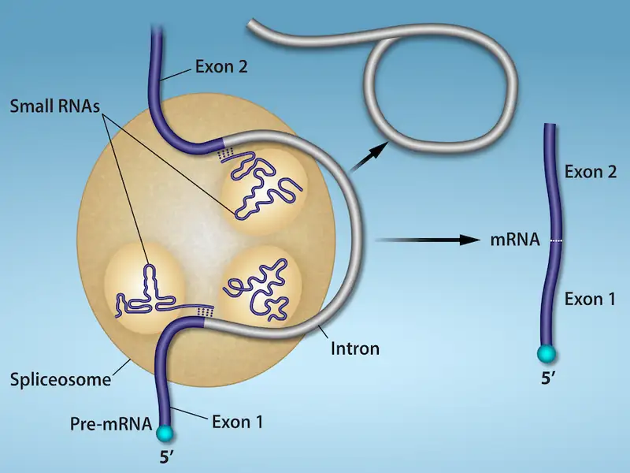
Errors in splicing are implicated in cancers and other human diseases. What kinds of mutations might lead to splicing errors? Think of different possible outcomes if splicing errors occur.
Note that more than 70 individual introns can be present, and each has to undergo the process of splicing—in addition to 5' capping and the addition of a poly-A tail—just to generate a single, translatable mRNA molecule.
Interactive
See how introns are removed during RNA splicing at this website.
Processing of tRNAs and rRNAs¶
The tRNAs and rRNAs are structural molecules that have roles in protein synthesis; however, these RNAs are not themselves translated. Pre-rRNAs are transcribed, processed, and assembled into ribosomes in the nucleolus. Pre-tRNAs are transcribed and processed in the nucleus and then released into the cytoplasm where they are linked to free amino acids for protein synthesis.
Most of the tRNAs and rRNAs in eukaryotes and prokaryotes are first transcribed as a long precursor molecule that spans multiple rRNAs or tRNAs. Enzymes then cleave the precursors into subunits corresponding to each structural RNA. Some of the bases of pre-rRNAs are methylated; that is, a –CH3 methyl functional group is added for stability. Pre-tRNA molecules also undergo methylation. As with pre-mRNAs, subunit excision occurs in eukaryotic pre-RNAs destined to become tRNAs or rRNAs.
Mature rRNAs make up approximately 50 percent of each ribosome. Some of a ribosome’s RNA molecules are purely structural, whereas others have catalytic or binding activities. Mature tRNAs take on a three-dimensional structure through local regions of base pairing stabilized by intramolecular hydrogen bonding. The tRNA folds to position the amino acid binding site at one end and the anticodon at the other end (Figure 15.14). The anticodon is a three-nucleotide sequence in a tRNA that interacts with an mRNA codon through complementary base pairing.
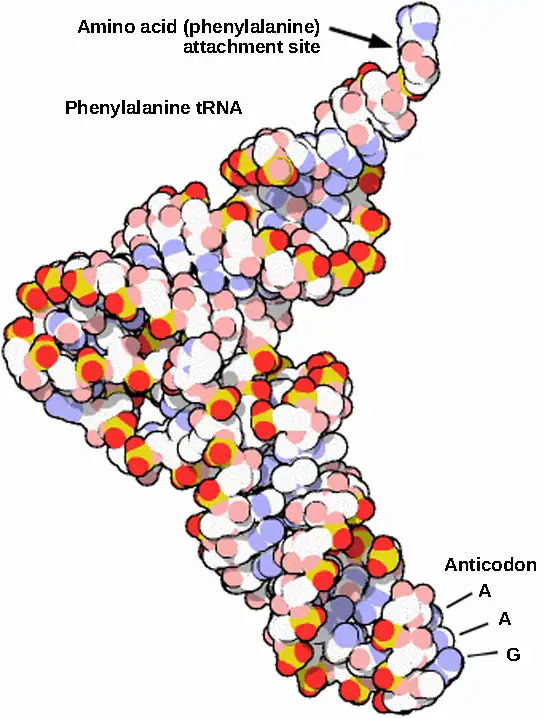
15.5 Ribosomes and Protein Synthesis¶
Learning Objectives
By the end of this section, you will be able to do the following:
- Describe the different steps in protein synthesis
- Discuss the role of ribosomes in protein synthesis
The synthesis of proteins consumes more of a cell’s energy than any other metabolic process. In turn, proteins account for more mass than any other component of living organisms (with the exception of water), and proteins perform virtually every function of a cell. The process of translation, or protein synthesis, involves the decoding of an mRNA message into a polypeptide product. Amino acids are covalently strung together by interlinking peptide bonds in lengths ranging from approximately 50 to more than 1000 amino acid residues. Each individual amino acid has an amino group (NH2) and a carboxyl (COOH) group. Polypeptides are formed when the amino group of one amino acid forms an amide (i.e., peptide) bond with the carboxyl group of another amino acid (Figure 15.15). This reaction is catalyzed by ribosomes and generates one water molecule.
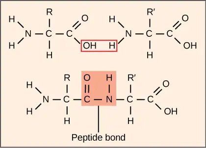
The Protein Synthesis Machinery¶
In addition to the mRNA template, many molecules and macromolecules contribute to the process of translation. The composition of each component may vary across species; for example, ribosomes may consist of different numbers of rRNAs and polypeptides depending on the organism. However, the general structures and functions of the protein synthesis machinery are comparable from bacteria to human cells. Translation requires the input of an mRNA template, ribosomes, tRNAs, and various enzymatic factors. (Note: A ribosome can be thought of as an enzyme whose amino acid binding sites are specified by mRNA.)
Interactive
Click through the steps of this PBS interactive to see protein synthesis in action.
Ribosomes¶
Even before an mRNA is translated, a cell must invest energy to build each of its ribosomes. In E. coli, there are between 10,000 and 70,000 ribosomes present in each cell at any given time. A ribosome is a complex macromolecule composed of structural and catalytic rRNAs, and many distinct polypeptides. In eukaryotes, the nucleolus is completely specialized for the synthesis and assembly of rRNAs.
Ribosomes exist in the cytoplasm of prokaryotes and in the cytoplasm and rough endoplasmic reticulum of eukaryotes. Mitochondria and chloroplasts also have their own ribosomes in the matrix and stroma, which look more similar to prokaryotic ribosomes (and have similar drug sensitivities) than the ribosomes just outside their outer membranes in the cytoplasm. Ribosomes dissociate into large and small subunits when they are not synthesizing proteins and reassociate during the initiation of translation. In E. coli, the small subunit is described as 30S, and the large subunit is 50S, for a total of 70S (recall that Svedberg units are not additive). Mammalian ribosomes have a small 40S subunit and a large 60S subunit, for a total of 80S. The small subunit is responsible for binding the mRNA template, whereas the large subunit sequentially binds tRNAs. Each mRNA molecule is simultaneously translated by many ribosomes, all synthesizing protein in the same direction: reading the mRNA from 5' to 3' and synthesizing the polypeptide from the N terminus to the C terminus. The complete mRNA/poly-ribosome structure is called a polysome.
tRNAs¶
The tRNAs are structural RNA molecules that were transcribed from genes by RNA polymerase III. Depending on the species, 40 to 60 types of tRNAs exist in the cytoplasm. Transfer RNAs serve as adaptor molecules. Each tRNA carries a specific amino acid and recognizes one or more of the mRNA codons that define the order of amino acids in a protein. Aminoacyl-tRNAs bind to the ribosome and add the corresponding amino acid to the polypeptide chain. Therefore, tRNAs are the molecules that actually “translate” the language of RNA into the language of proteins.
Of the 64 possible mRNA codons—or triplet combinations of A, U, G, and C—three specify the termination of protein synthesis and 61 specify the addition of amino acids to the polypeptide chain. Of these 61, one codon (AUG) also encodes the initiation of translation. Each tRNA anticodon can base pair with one or more of the mRNA codons for its amino acid. For instance, if the sequence CUA occurred on an mRNA template in the proper reading frame, it would bind a leucine tRNA expressing the complementary sequence, GAU. The ability of some tRNAs to match more than one codon is what gives the genetic code its blocky structure.
As the adaptor molecules of translation, it is surprising that tRNAs can fit so much specificity into such a small package. Consider that tRNAs need to interact with three factors: 1) they must be recognized by the correct aminoacyl synthetase (see below); 2) they must be recognized by ribosomes; and 3) they must bind to the correct sequence in mRNA.
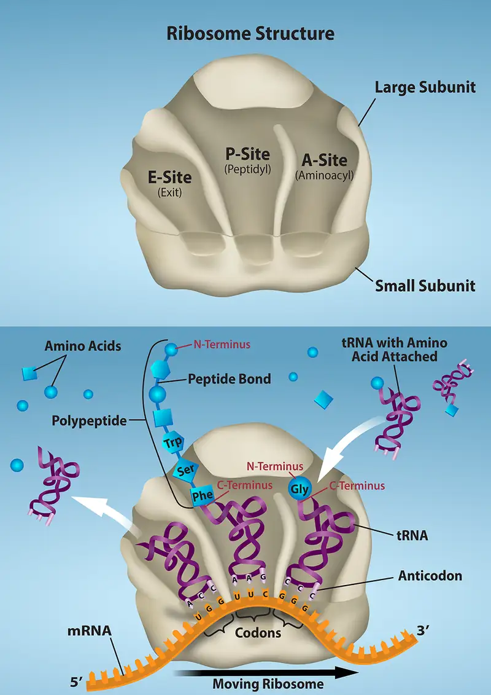
Aminoacyl tRNA Synthetases¶
The process of pre-tRNA synthesis by RNA polymerase III only creates the RNA portion of the adaptor molecule. The corresponding amino acid must be added later, once the tRNA is processed and exported to the cytoplasm. Through the process of tRNA “charging,” each tRNA molecule is linked to its correct amino acid by one of a group of enzymes called aminoacyl tRNA synthetases. At least one type of aminoacyl tRNA synthetase exists for each of the 20 amino acids; the exact number of aminoacyl tRNA synthetases varies by species. These enzymes first bind and hydrolyze ATP to catalyze a high-energy bond between an amino acid and adenosine monophosphate (AMP); a pyrophosphate molecule is expelled in this reaction. The activated amino acid is then transferred to the tRNA, and AMP is released. The term "charging" is appropriate, since the high-energy bond that attaches an amino acid to its tRNA is later used to drive the formation of the peptide bond. Each tRNA is named for its amino acid.
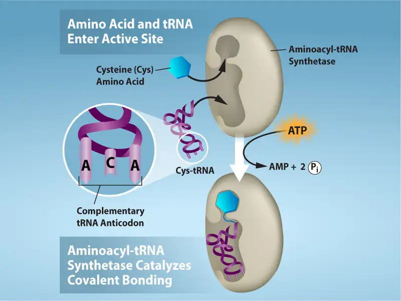
The Mechanism of Protein Synthesis¶
As with mRNA synthesis, protein synthesis can be divided into three phases: initiation, elongation, and termination. The process of translation is similar in prokaryotes and eukaryotes. Here we’ll explore how translation occurs in E. coli, a representative prokaryote, and specify any differences between prokaryotic and eukaryotic translation.
Initiation of Translation¶
Protein synthesis begins with the formation of an initiation complex. In E. coli, this complex involves the small 30S ribosome, the mRNA template, three initiation factors (IFs; IF-1, IF-2, and IF-3), and a special initiator tRNA, called tRNAfMet.
In E. coli mRNA, a sequence upstream of the first AUG codon, called the Shine-Dalgarno sequence (AGGAGG), interacts with the rRNA molecules that compose the ribosome. This interaction anchors the 30S ribosomal subunit at the correct location on the mRNA template. Guanosine triphosphate (GTP), which is a purine nucleotide triphosphate, acts as an energy source during translation—both at the start of elongation and during the ribosome’s translocation. Binding of the mRNA to the 30S ribosome also requires IF-3.
The initiator tRNA then interacts with the start codon AUG (or rarely, GUG). This tRNA carries the amino acid methionine, which is formylated after its attachment to the tRNA. The formylation creates a "faux" peptide bond between the formyl carboxyl group and the amino group of the methionine. Binding of the fMet-tRNAfMet is mediated by the initiation factor IF-2. The fMet begins every polypeptide chain synthesized by E. coli, but it is usually removed after translation is complete. When an in-frame AUG is encountered during translation elongation, a non-formylated methionine is inserted by a regular Met-tRNAMet. After the formation of the initiation complex, the 30S ribosomal subunit is joined by the 50S subunit to form the translation complex. In eukaryotes, a similar initiation complex forms, comprising mRNA, the 40S small ribosomal subunit, eukaryotic IFs, and nucleoside triphosphates (GTP and ATP). The methionine on the charged initiator tRNA, called Met-tRNAi, is not formylated. However, Met-tRNAi is distinct from other Met-tRNAs in that it can bind IFs.
Instead of depositing at the Shine-Dalgarno sequence, the eukaryotic initiation complex recognizes the 7-methylguanosine cap at the 5' end of the mRNA. A cap-binding protein (CBP) and several other IFs assist the movement of the ribosome to the 5' cap. Once at the cap, the initiation complex tracks along the mRNA in the 5' to 3' direction, searching for the AUG start codon. Many eukaryotic mRNAs are translated from the first AUG, but this is not always the case. According to Kozak’s rules, the nucleotides around the AUG indicate whether it is the correct start codon. Kozak’s rules state that the following consensus sequence must appear around the AUG of vertebrate genes: 5'-gccRccAUGG-3'. The R (for purine) indicates a site that can be either A or G, but cannot be C or U. Essentially, the closer the sequence is to this consensus, the higher the efficiency of translation.
Once the appropriate AUG is identified, the other proteins and CBP dissociate, and the 60S subunit binds to the complex of Met-tRNAi, mRNA, and the 40S subunit. This step completes the initiation of translation in eukaryotes.
Translation, Elongation, and Termination¶
In prokaryotes and eukaryotes, the basics of elongation are the same, so we will review elongation from the perspective of E. coli. When the translation complex is formed, the tRNA binding region of the ribosome consists of three compartments. The A (aminoacyl) site binds incoming charged aminoacyl tRNAs. The P (peptidyl) site binds charged tRNAs carrying amino acids that have formed peptide bonds with the growing polypeptide chain but have not yet dissociated from their corresponding tRNA. The E (exit) site releases dissociated tRNAs so that they can be recharged with free amino acids. The initiating methionyl-tRNA, however, occupies the P site at the beginning of the elongation phase of translation in both prokaryotes and eukaryotes.
During translation elongation, the mRNA template provides tRNA binding specificity. As the ribosome moves along the mRNA, each mRNA codon comes into register, and specific binding with the corresponding charged tRNA anticodon is ensured. If mRNA were not present in the elongation complex, the ribosome would bind tRNAs nonspecifically and randomly.
Elongation proceeds with charged tRNAs sequentially entering and leaving the ribosome as each new amino acid is added to the polypeptide chain. Movement of a tRNA from A to P to E site is induced by conformational changes that advance the ribosome by three bases in the 3' direction. The energy for each step along the ribosome is donated by elongation factors that hydrolyze GTP. GTP energy is required both for the binding of a new aminoacyl-tRNA to the A site and for its translocation to the P site after formation of the peptide bond. Peptide bonds form between the amino group of the amino acid attached to the A-site tRNA and the carboxyl group of the amino acid attached to the P-site tRNA. The formation of each peptide bond is catalyzed by peptidyl transferase, an RNA-based enzyme that is integrated into the 50S ribosomal subunit. The energy for each peptide bond formation is derived from the high-energy bond linking each amino acid to its tRNA. After peptide bond formation, the A-site tRNA that now holds the growing peptide chain moves to the P site, and the P-site tRNA that is now empty moves to the E site and is expelled from the ribosome (Figure 15.18). Amazingly, the E. coli translation apparatus takes only 0.05 seconds to add each amino acid, meaning that a 200-amino-acid protein can be translated in just 10 seconds.
Visual Connection
![Illustration shows the steps of protein synthesis. First, the initiator tRNA recognizes the sequence AUG on an mRNA that is associated with the small ribosomal subunit. The large subunit then joins the complex. Next, a second tRNA is recruited at the A site. A peptide bond is formed between the first amino acid, which is at the P site, and the second amino acid, which is at the A site. The mRNA then shifts and the first tRNA is moved to the E site, where it dissociates from the ribosome. Another tRNA binds at the A site, and the process is repeated. Finally, entry of a release factor into the A site terminates translation and the components dissociate at the stop codon.](img/figure-15-05-02-c4f4.webp)
Many antibiotics inhibit bacterial protein synthesis. For example, tetracycline blocks the A site on the bacterial ribosome, and chloramphenicol blocks peptidyl transfer. What specific effect would you expect each of these antibiotics to have on protein synthesis?
Tetracycline would directly affect:
- tRNA binding to the ribosome
- ribosome assembly
- growth of the protein chain
Chloramphenicol would directly affect:
- tRNA binding to the ribosome
- ribosome assembly
- growth of the protein chain
Termination of translation occurs when a nonsense codon (UAA, UAG, or UGA) is encountered. Upon aligning with the A site, these nonsense codons are recognized by protein release factors that resemble tRNAs. The releasing factors in both prokaryotes and eukaryotes instruct peptidyl transferase to add a water molecule to the carboxyl end of the P-site amino acid. This reaction forces the P-site amino acid to detach from its tRNA, and the newly made protein is released. The small and large ribosomal subunits dissociate from the mRNA and from each other; they are recruited almost immediately into another translation initiation complex. After many ribosomes have completed translation, the mRNA is degraded so the nucleotides can be reused in another transcription reaction.
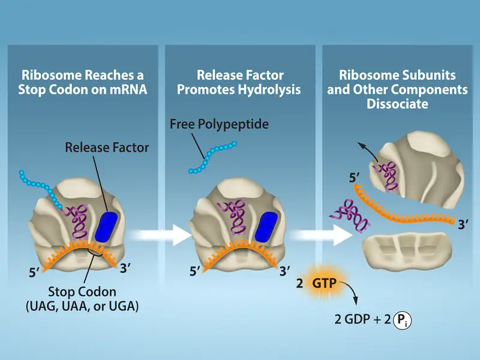
Protein Folding, Modification, and Targeting¶
During and after translation, individual amino acids may be chemically modified, signal sequences appended, and the new protein “folded” into a distinct three-dimensional structure as a result of intramolecular interactions. A signal sequence is a short sequence at the amino end of a protein that directs it to a specific cellular compartment. These sequences can be thought of as the protein’s “train ticket” to its ultimate destination, and are recognized by signal-recognition proteins that act as conductors. For instance, a specific signal sequence terminus will direct a protein to the mitochondria or chloroplasts (in plants). Once the protein reaches its cellular destination, the signal sequence is usually clipped off.
Many proteins fold spontaneously, but some proteins require helper molecules, called chaperones, to prevent them from aggregating during the complicated process of folding. Even if a protein is properly specified by its corresponding mRNA, it could take on a completely dysfunctional shape if abnormal temperature or pH conditions prevent it from folding correctly.
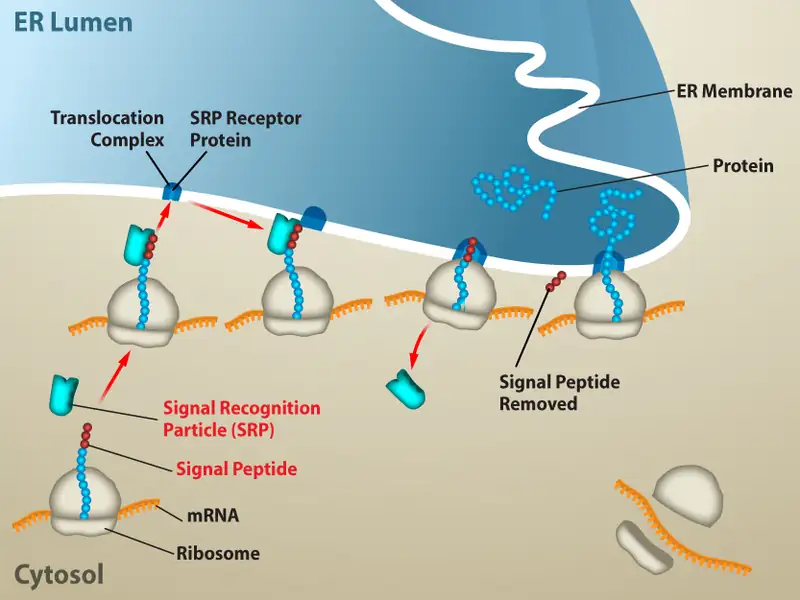
Chapter Review¶
Key Terms¶
- 7-methylguanosine cap
- modification added to the 5' end of pre-mRNAs to protect mRNA from degradation and assist translation
- aminoacyl tRNA synthetase
- enzyme that “charges” tRNA molecules by catalyzing a bond between the tRNA and a corresponding amino acid
- anticodon
- three-nucleotide sequence in a tRNA molecule that corresponds to an mRNA codon
- CAAT box
- (GGCCAATCT) essential eukaryotic promoter sequence involved in binding transcription factors
- central dogma
- states that genes specify the sequence of mRNAs, which in turn specify the sequence of proteins
- codon
- three consecutive nucleotides in mRNA that specify the insertion of an amino acid or the release of a polypeptide chain during translation
- colinear
- in terms of RNA and protein, three “units” of RNA (nucleotides) specify one “unit” of protein (amino acid) in a consecutive fashion
- consensus
- DNA sequence that is used by many species to perform the same or similar functions
- core enzyme
- prokaryotic RNA polymerase consisting of α, α, β, and β' but missing σ; this complex performs elongation
- degeneracy
- (of the genetic code) describes that a given amino acid can be encoded by more than one nucleotide triplet; the code is degenerate, but not ambiguous
- downstream
- nucleotides following the initiation site in the direction of mRNA transcription; in general, sequences that are toward the 3' end relative to a site on the mRNA
- exon
- sequence present in protein-coding mRNA after completion of pre-mRNA splicing
- FACT
- complex that “facilitates chromatin transcription” by disassembling nucleosomes ahead of a transcribing RNA polymerase II and reassembling them after the polymerase passes by
- GC-rich box
- (GGCG) nonessential eukaryotic promoter sequence that binds cellular factors to increase the efficiency of transcription; may be present several times in a promoter
- hairpin
- structure of RNA when it folds back on itself and forms intramolecular hydrogen bonds between complementary nucleotides
- holoenzyme
- prokaryotic RNA polymerase consisting of α, α, β, β', and σ; this complex is responsible for transcription initiation
- initiation site
- nucleotide from which mRNA synthesis proceeds in the 5' to 3' direction; denoted with a “+1”
- initiator tRNA
- in prokaryotes, called \(tRNA_{f}^{Met}\); in eukaryotes, called tRNAi; a tRNA that interacts with a start codon, binds directly to the ribosome P site, and links to a special methionine to begin a polypeptide chain
- intron
- non–protein-coding intervening sequences that are spliced from mRNA during processing
- Kozak’s rules
- determines the correct initiation AUG in a eukaryotic mRNA; the following consensus sequence must appear around the AUG: 5’-GCC(purine)CCAUGG-3’; the bolded bases are most important
- nonsense codon
- one of the three mRNA codons that specifies termination of translation
- nontemplate strand
- strand of DNA that is not used to transcribe mRNA; this strand is identical to the mRNA except that T nucleotides in the DNA are replaced by U nucleotides in the mRNA
- Octamer box
- (ATTTGCAT) nonessential eukaryotic promoter sequence that binds cellular factors to increase the efficiency of transcription; may be present several times in a promoter
- peptidyl transferase
- RNA-based enzyme that is integrated into the 50S ribosomal subunit and catalyzes the formation of peptide bonds
- plasmid
- extrachromosomal, covalently closed, circular DNA molecule that may only contain one or a few genes; common in prokaryotes
- poly-A tail
- modification added to the 3' end of pre-mRNAs to protect mRNA from degradation and assist mRNA export from the nucleus
- polysome
- mRNA molecule simultaneously being translated by many ribosomes all going in the same direction
- preinitiation complex
- cluster of transcription factors and other proteins that recruit RNA polymerase II for transcription of a DNA template
- promoter
- DNA sequence to which RNA polymerase and associated factors bind and initiate transcription
- reading frame
- sequence of triplet codons in mRNA that specify a particular protein; a ribosome shift of one or two nucleotides in either direction completely abolishes synthesis of that protein
- rho-dependent termination
- in prokaryotes, termination of transcription by an interaction between RNA polymerase and the rho protein at a run of G nucleotides on the DNA template
- rho-independent
- termination sequence-dependent termination of prokaryotic mRNA synthesis; caused by hairpin formation in the mRNA that stalls the polymerase
- RNA editing
- direct alteration of one or more nucleotides in an mRNA that has already been synthesized
- Shine-Dalgarno sequence
- (AGGAGG); initiates prokaryotic translation by interacting with rRNA molecules comprising the 30S ribosome
- signal sequence
- short tail of amino acids that directs a protein to a specific cellular compartment
- small nuclear RNA
- molecules synthesized by RNA polymerase III that have a variety of functions, including splicing pre-mRNAs and regulating transcription factors
- splicing
- process of removing introns and reconnecting exons in a pre-mRNA
- start codon
- AUG (or rarely, GUG) on an mRNA from which translation begins; always specifies methionine
- TATA box
- conserved promoter sequence in eukaryotes and prokaryotes that helps to establish the initiation site for transcription
- template strand
- strand of DNA that specifies the complementary mRNA molecule
- transcription bubble
- region of locally unwound DNA that allows for transcription of mRNA
- upstream
- nucleotides preceding the initiation site; in general, sequences toward the 5' end relative to a site on the mRNA
Summary¶
15.1 The Genetic Code¶
The genetic code refers to the DNA alphabet (A, T, C, G), the RNA alphabet (A, U, C, G), and the polypeptide alphabet (20 amino acids). The central dogma describes the flow of genetic information in the cell from genes to mRNA to proteins. Genes are used to make mRNA by the process of transcription; mRNA is used to synthesize proteins by the process of translation. The genetic code is degenerate because 64 triplet codons in mRNA specify only 20 amino acids and three nonsense codons. Most amino acids have several similar codons. Almost every species on the planet uses the same genetic code.
15.2 Prokaryotic Transcription¶
In prokaryotes, mRNA synthesis is initiated at a promoter sequence on the DNA template comprising two consensus sequences that recruit RNA polymerase. The prokaryotic polymerase consists of a core enzyme of four protein subunits and a σ protein that assists only with initiation. Elongation synthesizes mRNA in the 5' to 3' direction at a rate of 40 nucleotides per second. Termination liberates the mRNA and occurs either by rho protein interaction or by the formation of an mRNA hairpin.
15.3 Eukaryotic Transcription¶
Transcription in eukaryotes involves one of three types of polymerases, depending on the gene being transcribed. RNA polymerase II transcribes all of the protein-coding genes, whereas RNA polymerase I transcribes the tandemly duplicated rRNA genes, and RNA polymerase III transcribes various small RNAs, like the 5S rRNA, tRNA, and small nuclear RNA genes. The initiation of transcription in eukaryotes involves the binding of several transcription factors to complex promoter sequences that are usually located upstream of the gene being copied. The mRNA is synthesized in the 5' to 3' direction, and the FACT complex moves and reassembles nucleosomes as the polymerase passes by. Whereas RNA polymerases I and III terminate transcription by protein- or RNA hairpin-dependent methods, RNA polymerase II transcribes for 1,000 or more nucleotides beyond the gene template and cleaves the excess during pre-mRNA processing.
15.4 RNA Processing in Eukaryotes¶
Eukaryotic pre-mRNAs are modified with a 5' methylguanosine cap and a poly-A tail. These structures protect the mature mRNA from degradation and help export it from the nucleus. Pre-mRNAs also undergo splicing, in which introns are removed and exons are reconnected with single-nucleotide accuracy. Only finished mRNAs that have undergone 5' capping, 3' polyadenylation, and intron splicing are exported from the nucleus to the cytoplasm. Pre-rRNAs and pre-tRNAs may be processed by intramolecular cleavage, splicing, methylation, and chemical conversion of nucleotides. Rarely, RNA editing is also performed to insert missing bases after an mRNA has been synthesized.
15.5 Ribosomes and Protein Synthesis¶
The players in translation include the mRNA template, ribosomes, tRNAs, and various enzymatic factors. The small ribosomal subunit binds to the mRNA template either at the Shine-Dalgarno sequence (prokaryotes) or the 5' cap (eukaryotes). Translation begins at the initiating AUG on the mRNA, specifying methionine. The formation of peptide bonds occurs between sequential amino acids matched to the mRNA template by their tRNAs according to the genetic code. Charged tRNAs enter the ribosomal A site, and their amino acid bonds with the amino acid at the P site. The entire mRNA is translated in three-nucleotide “steps” of the ribosome. When a nonsense codon is encountered, a release factor binds and dissociates the components and frees the new protein. Folding of the protein occurs during and after translation.
Review Questions¶
15.1 The Genetic Code¶
1. The AUC and AUA codons in mRNA both specify isoleucine. What feature of the genetic code explains this?
- complementarity
- nonsense codons
- universality
- degeneracy
Answer
D
2. How many nucleotides are in 12 mRNA codons?
- 12
- 24
- 36
- 48
Answer
C
3. Which event contradicts the central dogma of molecular biology?
- Poly-A polymerase enzymes process mRNA in the nucleus.
- Endonuclease enzymes splice out and repair damaged DNA.
- Scientists use reverse transcriptase enzymes to make DNA from RNA.
- Codons specifying amino acids are degenerate and universal.
Answer
C
15.2 Prokaryotic Transcription¶
4. Which subunit of the E. coli polymerase confers specificity to transcription?
- α
- β
- β'
- σ
Answer
D
5. The -10 and -35 regions of prokaryotic promoters are called consensus sequences because ________.
- they are identical in all bacterial species
- they are similar in all bacterial species
- they exist in all organisms
- they have the same function in all organisms
Answer
B
6. Three different bacteria species have the following consensus sequences upstream of a conserved gene.
Table 15.2
| Species A | Species B | Species C | |
| -10 | TAATAAT | TTTAAT | TATATT |
| -35 | TTGACA | TTGGCC | TTGAAA |
Order the bacteria from most to least efficient initiation of gene transcription.
- A > B > C
- B > C > A
- C > B > A
- A > C > B
Answer
D
15.3 Eukaryotic Transcription¶
7. Which feature of promoters can be found in both prokaryotes and eukaryotes?
- GC box
- TATA box
- octamer box
- -10 and -35 sequences
Answer
B
8. What transcripts will be most affected by low levels of α-amanitin?
- 18S and 28S rRNAs
- pre-mRNAs
- 5S rRNAs and tRNAs
- other small nuclear RNAs
Answer
B
9. How do enhancers and promoters differ?
- Enhancers bind transcription factors to silence gene expression, while promoters activate transcription.
- Enhancers increase the efficiency of gene expression, but are not essential for transcription. Promoter recognition is essential to transcription initiation.
- Promoters bind transcription factors to increase the efficiency of transcription. Enhancers bind RNA polymerases to initiate transcription.
- There is no difference. Both are transcription factor-binding sequences in DNA.
Answer
B
15.4 RNA Processing in Eukaryotes¶
10. Which pre-mRNA processing step is important for initiating translation?
- poly-A tail
- RNA editing
- splicing
- 7-methylguanosine cap
Answer
D
11. What processing step enhances the stability of pre-tRNAs and pre-rRNAs?
- methylation
- nucleotide modification
- cleavage
- splicing
Answer
A
12. A scientist identifies a pre-mRNA with the following structure.
What is the predicted size of the corresponding mature mRNA in base pairs (bp), excluding the 5’ cap and 3’ poly-A tail?
- 220bp
- 295bp
- 140bp
- 435bp
Answer
B
15.5 Ribosomes and Protein Synthesis¶
13. The RNA components of ribosomes are synthesized in the ________.
- cytoplasm
- nucleus
- nucleolus
- endoplasmic reticulum
Answer
C
14. In any given species, there are at least how many types of aminoacyl tRNA synthetases?
- 20
- 40
- 100
- 200
Answer
A
15. A scientist introduces a mutation that makes the 60S ribosomal subunit nonfunctional in a human cell line. What would be the predicted effect on translation?
- Translation stalls after the initiation AUG codon is identified.
- The ribosome cannot catalyze the formation of peptide bonds between the tRNAs in the A and P sites.
- The ribosome cannot interact with mRNAs.
- tRNAs cannot exit the E site of the ribosome.
Answer
A
Critical Thinking Questions¶
15.1 The Genetic Code¶
16. Imagine if there were 200 commonly occurring amino acids instead of 20. Given what you know about the genetic code, what would be the shortest possible codon length? Explain.
Answer
For 200 commonly occurring amino acids, codons consisting of four types of nucleotides would have to be at least four nucleotides long, because 44 = 256. There would be much less degeneracy in this case.
17. Discuss how degeneracy of the genetic code makes cells more robust to mutations.
Answer
Codons that specify the same amino acid typically only differ by one nucleotide. In addition, amino acids with chemically similar side chains are encoded by similar codons. This nuance of the genetic code ensures that a single-nucleotide substitution mutation might either specify the same amino acid and have no effect, or may specify a similar amino acid, preventing the protein from being rendered completely nonfunctional.
18. A scientist sequencing mRNA identifies the following strand: CUAUGUGUCGUAACAGCCGAUGACCCG
What is the sequence of the amino acid chain this mRNA makes when it is translated?
Answer
Met Cys Arg Asn Ser Arg
The first step to writing the amino acid sequence is to find the start codon AUG. Then, the nucleotide sequence is separated into triplets: CU AUG UGU CGU AAC AGC CGA UGA. We stop the translation at UGA because that triplet encodes a stop codon. When we convert these codons to amino acids, the sequence becomes Met Cys Arg Asn Ser Arg.
15.2 Prokaryotic Transcription¶
19. If mRNA is complementary to the DNA template strand and the DNA template strand is complementary to the DNA nontemplate strand, then why are base sequences of mRNA and the DNA nontemplate strand not identical? Could they ever be?
Answer
DNA is different from RNA in that T nucleotides in DNA are replaced with U nucleotides in RNA. Therefore, they could never be identical in base sequence.
20. In your own words, describe the difference between rho-dependent and rho-independent termination of transcription in prokaryotes.
Answer
Rho-dependent termination is controlled by the rho protein, which tracks along behind the polymerase on the growing mRNA chain. Near the end of the gene, the polymerase stalls at a run of G nucleotides on the DNA template. The rho protein collides with the polymerase and releases mRNA from the transcription bubble. Rho-independent termination is controlled by specific sequences in the DNA template strand. As the polymerase nears the end of the gene being transcribed, it encounters a region rich in C–G nucleotides. This creates an mRNA hairpin that causes the polymerase to stall right as it begins to transcribe a region rich in A–T nucleotides. Because A–U bonds are less thermostable, the core enzyme falls away.
21. A fragment of bacterial DNA reads:
3’ –TACCTATAATCTCAATTGATAGAAGCACTCTAC– 5’
Assuming that this fragment is the template strand, what is the sequence of mRNA that would be transcribed? (Hint: Be sure to identify the initiation site.)
Answer
ACUAUCUUCGUGAGAUG
By examining the DNA sequence, we can see that there is a -10 consensus sequence near the 3’ end of the fragment. If we then count downstream, the +1 initiation site is the T immediately following the sequence AAT. This means the DNA fragment that will serve as the template for transcription has the sequence TGATAGAAGCACTCTAC. The mRNA made from this template will have complimentary base pairing with uracil (U) instead of thymine (T). This gives us ACUAUCUUCGUGAGAUG as the transcribed mRNA sequence.
15.3 Eukaryotic Transcription¶
22. A scientist observes that a cell has an RNA polymerase deficiency that prevents it from making proteins. Describe three additional observations that would together support the conclusion that a defect in RNA polymerase I activity, and not problems with the other polymerases, causes the defect.
Answer
To determine that a RNA polymerase I mutation or deficiency is causing the defect in protein production, the scientist would need to make observations that provide evidence that RNA polymerases II and III are working in the cell. The observations eliminating RNA polymerase II as the defect could include:
- Transcription of mRNAs in the nucleus;
- Presence of processed mRNAs in the cytoplasm
The observations eliminating RNA polymerase III could include:
- Isolation of small nuclear RNAs from the cell;
- Isolation of microRNAs from the cell;
- Transcription of 5S rRNA in the nucleus;
- Presence of tRNAs in the cytoplasm
The observations implicating RNA polymerase I could include:
- A lack of functional ribosomes in the cytoplasm (RNA polymerase I or III);
- A lack of RNA polymerase I protein;
- RNA polymerase I protein is non-functional
15.4 RNA Processing in Eukaryotes¶
23. Chronic lymphocytic leukemia patients often harbor nonsense mutations in their spliceosome machinery. Describe how this mutation of the spliceosome would change the final location and sequence of a pre-mRNA.
Answer
Nonsense spliceosome mutations would eliminate the splicing step of mRNA processing, so the mature mRNAs would retain their introns and be perfectly complementary to the entire DNA template sequence. However, the mRNAs would still undergo addition of the 5’ cap and poly-A tail, and therefore each has the potential to be exported to the cytoplasm for translation.
15.5 Ribosomes and Protein Synthesis¶
24. Transcribe and translate the following DNA sequence (nontemplate strand): 5'-ATGGCCGGTTATTAAGCA-3'
Answer
The mRNA would be: 5'-AUGGCCGGUUAUUAAGCA-3'. The protein would be: MAGY. Even though there are six codons, the fifth codon corresponds to a stop, so the sixth codon would not be translated.
25. Explain how single nucleotide changes can have vastly different effects on protein function.
Answer
Nucleotide changes in the third position of codons may not change the amino acid and would have no effect on the protein. Other nucleotide changes that change important amino acids or create or delete start or stop codons would have severe effects on the amino acid sequence of the protein.
26. A normal mRNA that reads 5’ – UGCCAUGGUAAUAACACAUGAGGCCUGAAC– 3’ has an insertion mutation that changes the sequence to 5’ -UGCCAUGGUUAAUAACACAUGAGGCCUGAAC– 3’. Translate the original mRNA and the mutated mRNA, and explain how insertion mutations can have dramatic effects on proteins. (Hint: Be sure to find the initiation site.)
Answer
Original mRNA: 5’ –UGCC AUG GUA AUA ACA CAU GAG GCC UGA AC– 3’;
Translation: Met – Val – Ile – Thr – His – Glu – Ala;
Mutated mRNA: 5’ –UGCC AUG GUU AAU AAC ACA UGA GGCCUGAAC– 3’;
Translation: Met – Val – Asn – Asn – Thr;
Insertion mutations can have dramatic effects on proteins because they shift the reading frame for the codons. This changes the amino acids encoded by the mRNA, and can introduce premature start or stop sites.
Visual Connection Questions¶
15.3 Eukaryotic Transcription¶
27. Figure 15.11 A scientist splices a eukaryotic promoter in front of a bacterial gene and inserts the gene in a bacterial chromosome. Would you expect the bacteria to transcribe the gene?
Answer
Figure 15.11 No. Prokaryotes use different promoters than eukaryotes.
15.4 RNA Processing in Eukaryotes¶
28. Figure 15.13 Errors in splicing are implicated in cancers and other human diseases. What kinds of mutations might lead to splicing errors? Think of different possible outcomes if splicing errors occur.
Answer
Figure 15.13 Mutations in the spliceosome recognition sequence at each end of the intron, or in the proteins and RNAs that make up the spliceosome, may impair splicing. Mutations may also add new spliceosome recognition sites. Splicing errors could lead to introns being retained in spliced RNA, exons being excised, or changes in the location of the splice site.
15.5 Ribosomes and Protein Synthesis¶
29. Figure 15.18 Many antibiotics inhibit bacterial protein synthesis. For example, tetracycline blocks the A site on the bacterial ribosome, and chloramphenicol blocks peptidyl transfer. What specific effect would you expect each of these antibiotics to have on protein synthesis?
Tetracycline would directly affect:
- tRNA binding to the ribosome
- ribosome assembly
- growth of the protein chain
Chloramphenicol would directly affect
- tRNA binding to the ribosome
- ribosome assembly
- growth of the protein chain
Answer
Figure 15.18 Tetracycline: a; Chloramphenicol: c.
Adapted from Biology 2e by OpenStax, licensed under CC BY 4.0. Access the original for free at openstax.org. Changes: converted to the web reading format of The Open Book Project.
-
H Liang et al., “Fast evolution of core promoters in primate genomes,” Molecular Biology and Evolution 25 (2008): 1239–44. ↩